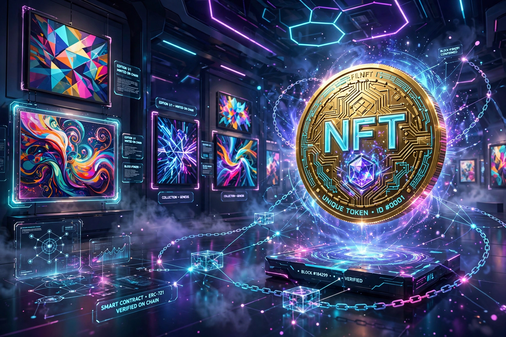

A non-fungible token (NFT) is a unique digital identifier recorded on a blockchain, used to certify ownership and authenticity of a digital or physical asset. Unlike cryptocurrencies such as bitcoin, NFTs are not mutually interchangeable (fungible).

Early experiments included Colored Coins on Bitcoin (2012) and Kevin McCoy's Quantum (2014). The ERC-721 standard on Ethereum (2018) enabled projects such as CryptoKitties (2017) and CryptoPunks. The market boomed in 2021, when Beeple's Everydays sold at Christie's for $69.3 million, then contracted sharply in 2022-2023.
NFTs have been used for digital art, collectibles, gaming items, music, tickets and domain names. Critics cite speculation, fraud, wash trading, copyright issues, and that an NFT typically does not convey copyright or guarantee the underlying file's persistence. Energy concerns diminished for Ethereum after its move to proof-of-stake in 2022.
Main standards are ERC-721 and ERC-1155 on Ethereum and equivalents on Solana, Tezos and other chains. See Blockchain, Ethereum, Cryptocurrency.